홈 › 아카이브
아카이브
검증된 경험을
검증된 경험을
다음 대학의 근거로.
실증 사례집, 기술 동향·연구, 매뉴얼·소개자료를 한 곳에 모았습니다.
실증 사례집
11개 자료 PDF수업적용·설계·운영 사례한림대학교 · 신범주 · 2026.07.24
PDF수업적용·설계·운영 사례한림대학교 · 신범주 · 2026.07.24 PDFC 프로그래밍한림대학교 소프트웨어학부 · 김진환 · 2026.06.16
PDFC 프로그래밍한림대학교 소프트웨어학부 · 김진환 · 2026.06.16 PDF원가관리회계한림대학교 경영학과 · 박주형 · 2026.06.16
PDF원가관리회계한림대학교 경영학과 · 박주형 · 2026.06.16 PDF유소년 스포츠 지도론한림대학교 체육학과 · 정은희 · 2026.06.16
PDF유소년 스포츠 지도론한림대학교 체육학과 · 정은희 · 2026.06.16 PDF창의코딩-모두의SW리터러시한림대학교 법학과 · 정연진 · 2026.06.16
PDF창의코딩-모두의SW리터러시한림대학교 법학과 · 정연진 · 2026.06.16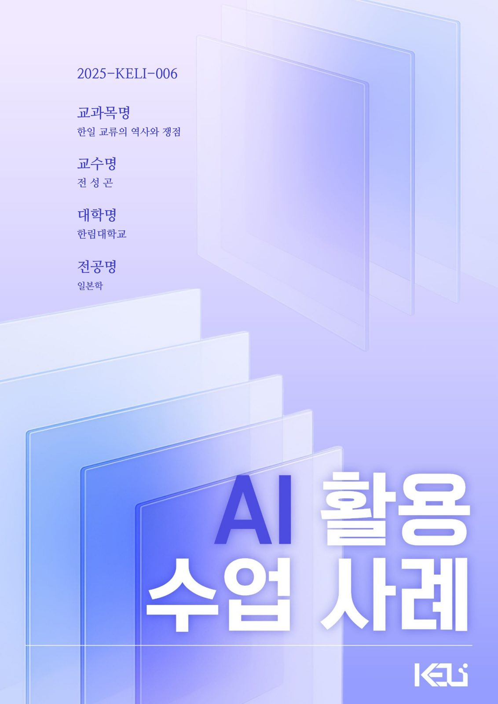
PDF한일 교류의 역사와 쟁점한림대학교 일본학 · 전성곤 · 2026.06.16PDF데이터로 소통하기한림대학교 교양대학 · 이은정 · 2026.06.16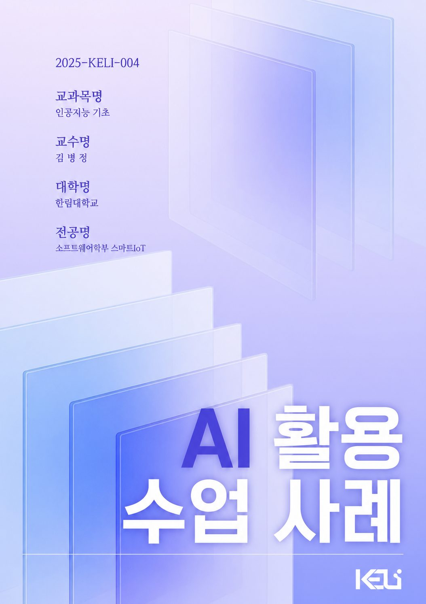
PDF인공지능 기초한림대학교 소프트웨어학부 스마트IoT · 김병정 · 2026.06.16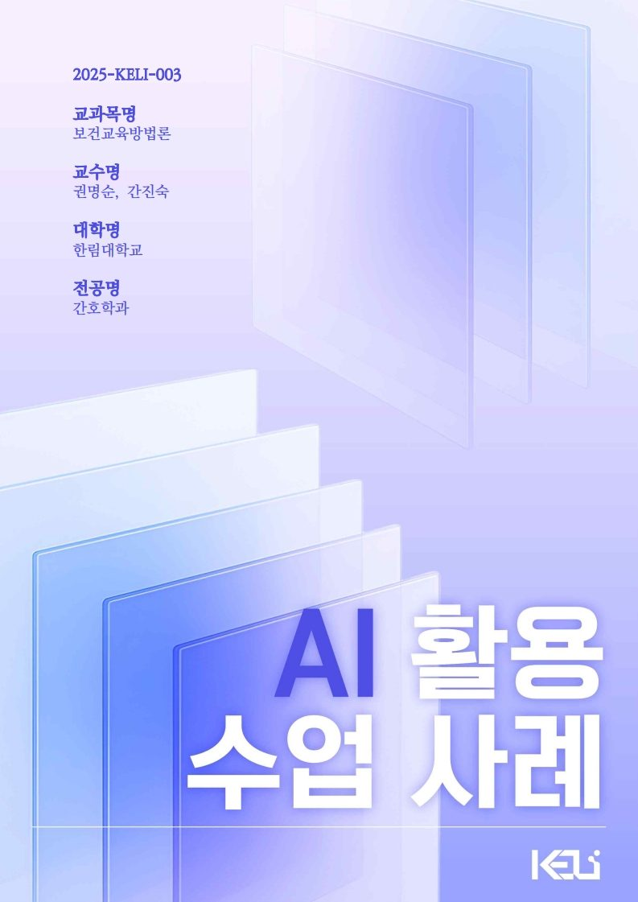
PDF보건교육방법론한림대학교 간호학과 · 권명순 · 간진숙 · 2026.04.16PDF통계적 알고리즘한림대학교 데이터사이언스학부 데이터테크전공 · 이재화 · 2026.04.15PDFCareer English 1한림대학교 일송자유교양대학/영어교육센터 · 이재선 · 2026.04.15기술 동향·연구
10개 자료PDF월간 에듀테크 솔루션 분석 보고서 Vol.05 · AI 평가·피드백 도구KELI 사무국 · 김슬기 · 2026년 10월 PDF월간 에듀테크 솔루션 분석 보고서 Vol.01 · LLM 기반 학습 도구KELI 사무국 · 김슬기 · 2026년 6월
PDF월간 에듀테크 솔루션 분석 보고서 Vol.01 · LLM 기반 학습 도구KELI 사무국 · 김슬기 · 2026년 6월
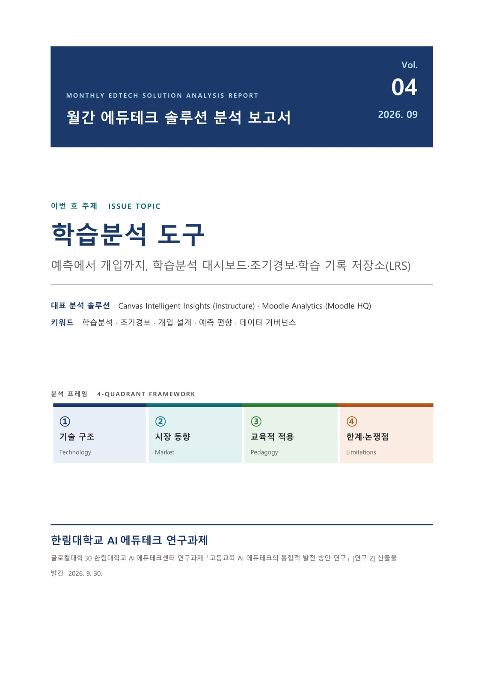
PDF월간 에듀테크 솔루션 분석 보고서 Vol.04 · 학습분석 도구KELI 사무국 · 김슬기 · 2026년 9월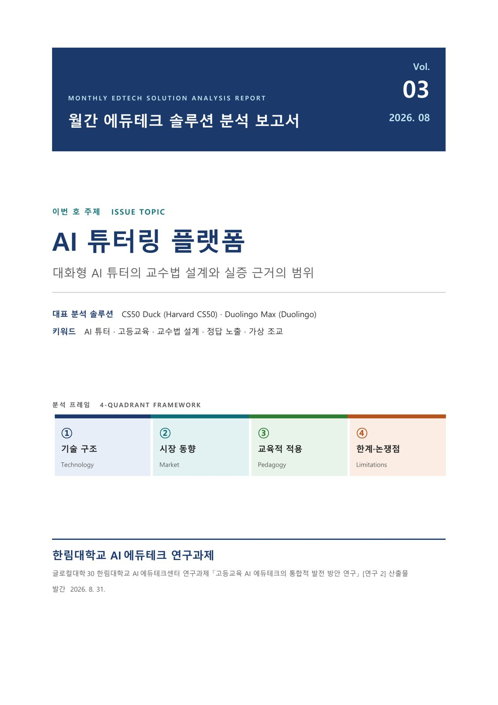
PDF월간 에듀테크 솔루션 분석 보고서 Vol.03 · AI 튜터링 플랫폼KELI 사무국 · 김슬기 · 2026년 8월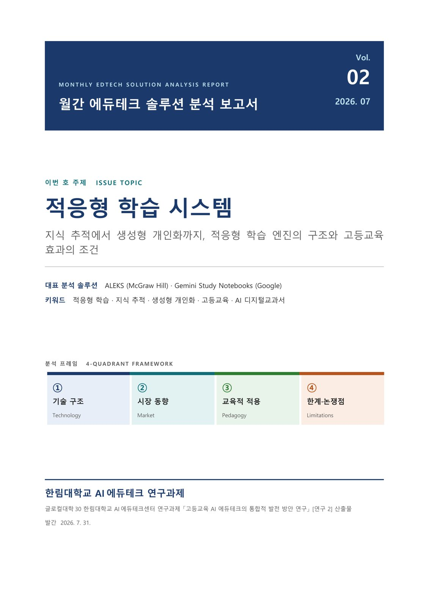
PDF월간 에듀테크 솔루션 분석 보고서 Vol.02 · 적응형 학습 시스템KELI 사무국 · 김슬기 · 2026년 7월PDF월간 에듀테크 솔루션 분석 보고서 Vol.01 · LLM 기반 학습 도구KELI 사무국 · 김슬기 · 2026년 6월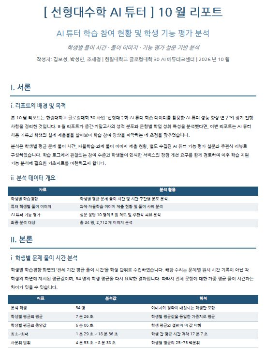
PDF2026년 10월 선형대수학 AI 튜터 분석 보고서 — 학습 참여 현황·기능 평가KELI 사무국 · 신범주 · 2026.10.28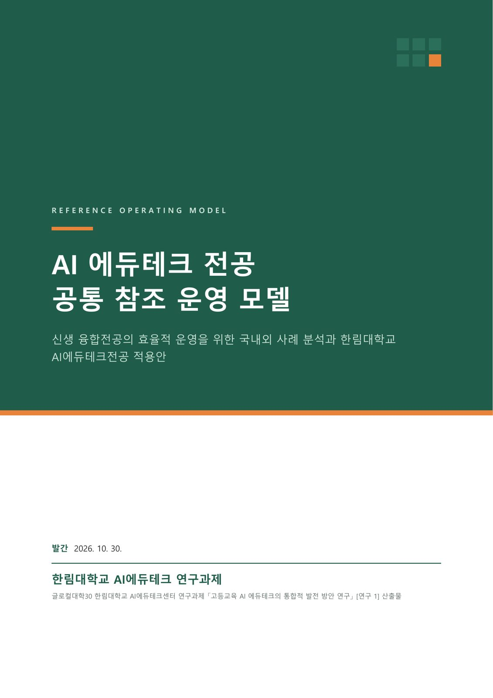
PDFAI 에듀테크 전공 공통 참조 운영 모델: 신생 융합전공의 효율적 운영을 위한 국내외 사례 분석과 한림대학교 AI에듀테크전공 적용안KELI 사무국 · 김슬기 외 · 2026.10.01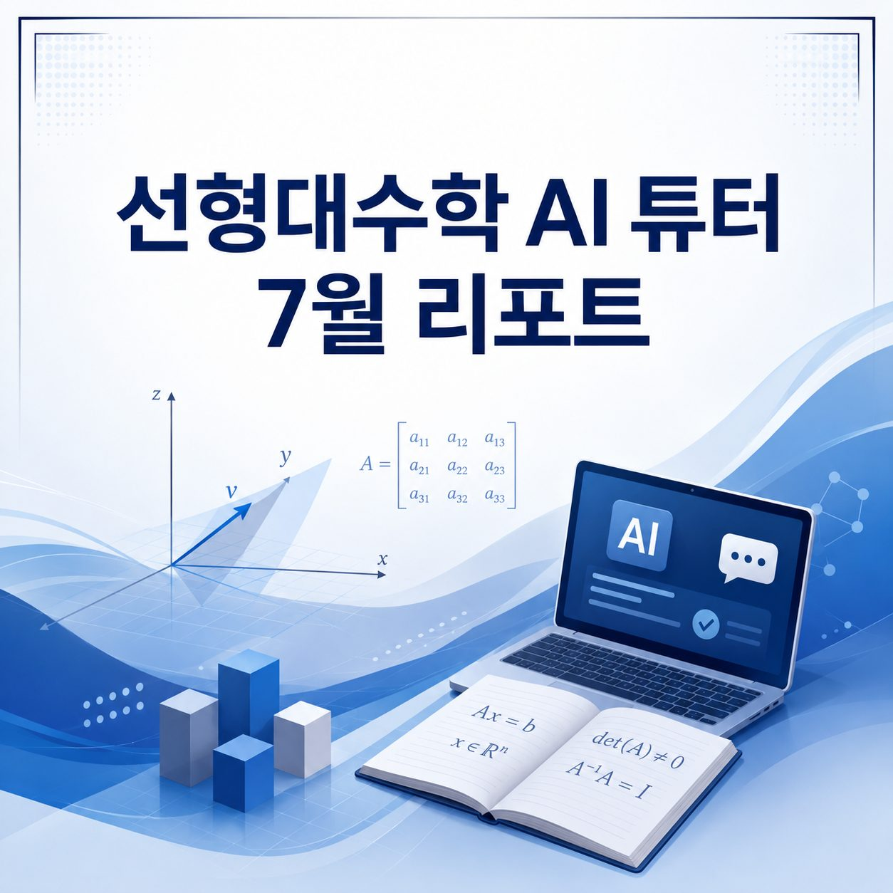
PDF2026년 7월 선형대수학 AI 튜터 분석 보고서KELI 사무국 · 신범주 · 2026.07.23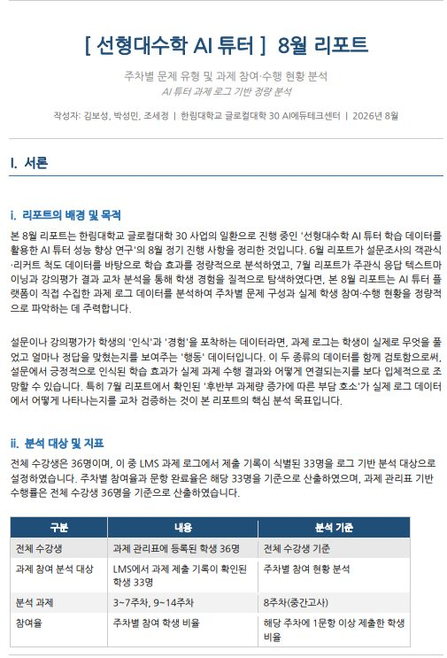
PDF2026년 8월 선형대수학 AI 튜터 분석 보고서 — 과제 참여·수행 현황KELI 사무국 · 신범주 · 2026.08.21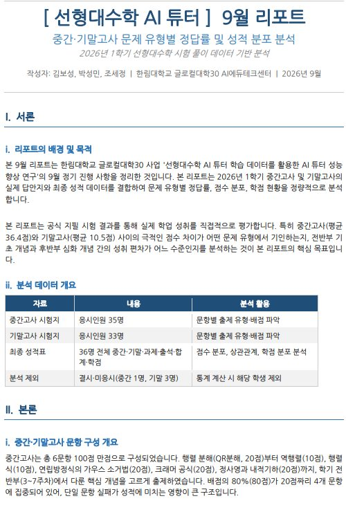
PDF2026년 9월 선형대수학 AI 튜터 분석 보고서 — 시험 정답률·성적 분포KELI 사무국 · 신범주 · 2026.09.28자료는 새 창에서 열립니다.
일부 PDF는 한림 AI 교육 포털에 있습니다.